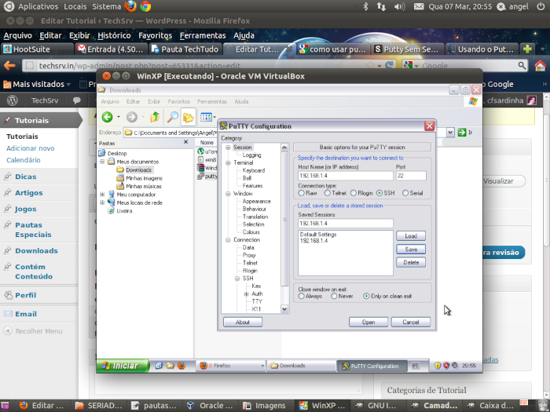
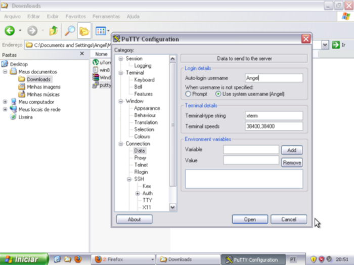

Passo 1. Faça o download do software clicando
Passo 2. O PuTTy não é um arquivo para ser instalado. Sendo assim, escolha um diretório para colocá-lo. Uma vez clicado no arquivo, o programa abrirá;
Passo 3. Nós vamos criar uma conexão de tunelamento SSH e acessar sites bloqueados ignorando as configurações e bloqueios que possam existir na rede. A máquina estará rodando na porta 22, que já vem definida;
Passo 4. Vá em ‘Session’ e digite o "IP" da máquina que deseja acessar;
Passo 5. Em "Saved Sessions", digite um nome para o perfil desse servidor. Pode ser o próprio IP ou qualquer palavra que te ajude a lembrar a que perfil está associado. Depois, clique em "Save", na lateral;
Passo 6. Na opção “Connection”, clique no sub menu ‘Data’. No campo "Auto-login username", digite seu nome de usuário administrador ou ‘root’. Deixe o resto com está;
Passo 7. Vá em "SSH", sub-menu "Tunnels" e configure a source port para 1080 e clique em "add";
Passo 8. Caso o computador que deseja acessar possua autenticação, configure o usuário e senha no menu "Connections", no sub menu "Proxy";
Passo 9. Selecione o perfil salvo e clique em "Load" e "Open";
Passo 10. Na primeira vez, aparecerá uma mensagem avisando sobre a criação de chaves criptográficas de acesso. Clique em "aceitar".